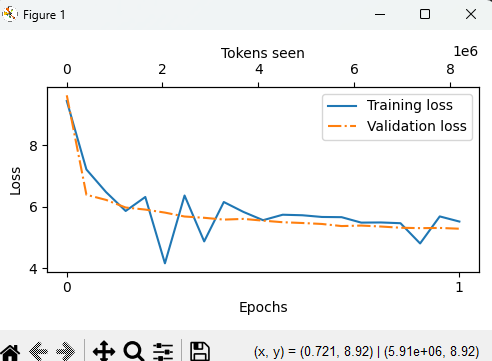

"What a fine day, and a s-eyed, of the old man, and the place, and I should have not as the and not the world, and the same one of them. The first as the The old."
The latest words for expueryv2. Firstly some background, I first attempted to train the model on all 53 files. Realized this would take over 200 hours on a data-center (professional, very expensive) level GPU, I decided to do only 2 files. 2 days into trainig, I noticed we were on step 2000 of 36000 for the first file, so I stopped training all together. I'm going to need to find a better way to tweak the data, tweak the code, such that I can train it. So the output makes sense, since it was interuppted very early on in training. But, if you think about it, it's still pretty cool. There is coherence, maybe not grammatically, but still enough to see that it has learned some things about english language. "of the old man, and the place, I should not have" are all things that are commonly strung together in talk. So even though this model is an interuppted on a very very small part of the gutenberg dataset, it's still pretty cool.

From the analytics, you can see that it was progressing towards less and less error, so this is good as well. I think we were on about 5, where we start at 10 and the best we can get is 0. So now we look towards the future -- I'll tweak the training script, including the optimizers, the data (probably massively shorten the data), and other things so that I can finish training. Until then, I'll take a step back from the gradio space. Instead, I'll focus on just deploying the models to this website and documenting progress. I'll probably start a log here. That shoudl be sufficient. Still, though, I'm happy with what I have so far. I can see lots of improvement, and lots of interesting paths I can go down now that I can train a model.